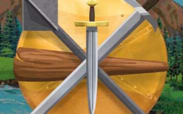

Welcome to The Realm Online
The Realm Online is a pioneering massively multiplayer online role-playing game (MMORPG) originally launched in the 1990s. It features turn-based combat, where players engage in strategic battles, complete quests, participate in PvP battles, explore dungeons, hunt monsters, and contribute to a player-driven economy. The game emphasizes RPG elements like character customization, skill progression, and multiplayer adventures in a nostalgic retro style.
Whether you're a new player or a veteran, dive into a world of magic, melee, and mystery. Start your journey in towns like East Leinster, build your character through leveling and gear, and master spells or weapons to conquer challenging areas.
About This Site
This site is meant for leveling guides, strategies and general information about the realm online. This information is as accurate as possible and is taken from AI and then reimagined to suite the Despothes Grove server.
Accesing Legacy content
To access legacy content for The Realm Online's Despothes Grove server through your website, integrate a dedicated section linking to the “Legacy Server and Data Links” found at the bottom of the The Realm Online Wiki. Highlight key legacy-specific pages, such as dungeons like The Underground, Test of Souls, and The Foundry, which are exclusive to Despothes Grove and not active in Mabon’s Gamble. Include a brief guide encouraging users to contribute updates via the wiki’s editing tools or the official Discord (contacting users like Masterblaster or Kanlas for map/item submissions). Embed direct links to relevant wiki pages (e.g., New Player Guide, Skills, Weapons) and note that legacy content, while less maintained, covers Despothes Grove's expansive historical content, including its level 1000 cap and unique zones/dungeons.
Leveling
Welcome to our leveling guide for The Realm Online’s Despothes Grove server, your essential resource for mastering early progression and stat optimization. This page focuses on tailored stat builds for Warriors, Wizards, Thieves, and Adventurers, alongside the best starting zones for XP (levels 1-20). Learn how to allocate your initial 8 attribute points (Strength, Intelligence, Dexterity, Endurance) for your playstyle and navigate zones like Ratling Run (levels 1-6), North Havenwood (5-14), and Troll Spit Cellar (1-8) to maximize XP while avoiding the 500 XP death penalty. Sourced from community insights and The Realm Online Wiki, this guide invites your contributions via the wiki or Discord to enhance this nostalgic journey!
Strategies
Welcome to our strategies page for The Realm Online’s Despothes Grove server, your ultimate guide to mastering stat builds and early-game XP zones. This page dives deep into optimizing your character’s initial 8 attribute points (Strength for melee damage, Intelligence for spell power, Dexterity for accuracy and dodges, Endurance for HP) across Warrior, Wizard, Thief, and Adventurer playstyles. Discover key tactics for efficient leveling in starter zones like Ratling Run (levels 1-6), North Havenwood (5-14), and Troll Spit Cellar (1-8), with tips to maximize XP gains and avoid the 500 XP death penalty. Sourced from community expertise and The Realm Online Wiki, this page invites you to share your strategies via the wiki or Discord to keep the Despothes Grove adventure thriving!